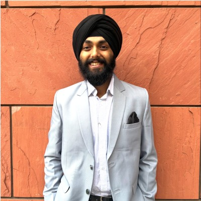
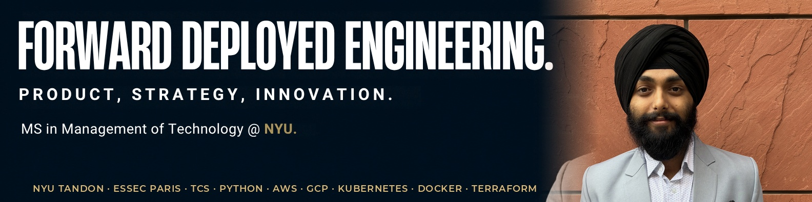

In the room with users
Sit with the people doing the work, watch where it breaks, prototype against that.
- Field research
- Prototyping
- UX feedback
- Adoption
Forward Deployed Engineering · Strategy, Innovation and AI Products
I am Gagandeep Singh Pahuja, an NYU Tandon Management of Technology candidate with a DevOps engineering background. I have kept production systems alive, shipped products side by side with customers, and founded ventures end to end. My focus is the deployment side of strategy and innovation: between customers and engineering, until the technology works in the real world.
Start where you are

How I deploy
Understand the user, build against the real problem, keep the system alive after launch.
Sit with the people doing the work, watch where it breaks, prototype against that.
Three years of DevOps at TCS: cloud infrastructure, pipelines and reliability across AWS and GCP.
What breaks in the field becomes requirements, priorities and fixes the core team can act on.
Selected work
Things I have built, shipped and put in front of real users.
Machine learning · Built and deployed
I led a four-person team building an end-to-end machine learning pipeline for London property prices. The final LightGBM model, tuned with Optuna, used custom geospatial features and shipped as a live web app on Vercel.
NYU capstone · AI evaluation
Before an organisation deploys AI, someone has to answer plainly: is it ethical, secure and ready? GUARDIAN turns scattered technical evidence into a readiness read decision-makers can act on. I lead the product work, sponsored by the Cyber Institute at NYU.
Platform build · Team lead
Campus discovery products often optimise for volume before trust. I lead a student team building a verified campus platform where identity, intent and safety shape the experience from the start, from market sizing to architecture.
Founder · Customer discovery
Computer science students needed real project experience, while early startups needed affordable technical help. UG Solutions connected the two sides through assessments, partnerships and a continuing project pipeline.
Built on research with more than 100 peers and testing with local startups.
Building in the open
My most recently updated builds, pulled live from GitHub every time this page loads. If it is here, it exists.
Loading the latest builds…
How I build with AI
I use AI the way a forward-deployed builder should: start from the user’s workflow, prototype quickly, verify important outputs against source data, and turn the result into something a team can actually adopt.
Research, prototypes and automation run through it under my direction: this website, my public agent and my job-search systems. I set the constraints, review the output and ship what holds up.
Important work gets audited by a second model before it reaches anyone. Its check of a five-university benchmark caught a real error my first pass missed. It also powers my public agent.
Literature reviews and dense academic reading for the MS and the capstone, turned into briefs, requirements and decision-ready summaries.
Fast first drafts of executive decks and designs. I brief it with a design system, merge the real content in myself and verify the export, so decks look designed, not assembled.
Every meeting becomes notes, decisions and action items with owners, so what users and stakeholders say does not get lost after the call.
Drafts, strategy and arguments get stress-tested by more than one model before I trust them. Claude and Grok are part of that rotation, each with a different blind spot.
Experience
Production rooms, customer rooms and founder rooms. The common thread is ownership of the outcome.
NYU Tandon School of Engineering. Course coordination, academic events and programme operations for Professors Tom Mazzone and Shizhu Liu.
TechSHRM at NYU. External partnerships and industry links, including the HR industry panel I hosted at Tandon.
Foxbiz Software. I defined feature requirements and delivery timelines for a modular SME platform: online stores, invoicing, multilingual settings, device pairing and data backup.
Mahamaya Food Corner. Led a small team from wireframe to a live food delivery platform, researching digital literacy and adoption barriers on the ground.
Tata Consultancy Services. I managed cloud infrastructure across AWS and GCP, applied CyberArk and DevOps practices, and worked across teams on reliability and performance.
4MirrorTech Innovations. I built machine learning applications with TensorFlow and OpenCV across image processing, facial recognition and social-distancing use cases.
UG Solutions. I launched a venture connecting computer science students with industry projects and startup partners.
Xtrude Lab. I developed interactive environments and level designs with Unreal Engine, C# and blueprint scripting.
Education and credentials
London, Paris, New York, and an engineering campus in India.
Voice and community
Deployment work runs on trust and communication. LinkedIn is where I practise both in public, writing on product, AI and the work of getting technology adopted.

LinkedIn creator and mentor
I share lessons from product, AI, careers and student leadership, and mentor students on project ideas. The audience is not the point. The conversations are.
500+ LinkedIn connections · Brooklyn, New York · Always open to a product conversation
Featured by NYU Tandon
NYU Tandon profiled my route from TCS and two failed ventures to the Management of Technology programme across London, Paris and New York, setbacks included.
NYU Tandon also ran a Q&A with me on the global route itself: the London first year, then the ESSEC summer in Paris, and working across cultures.
“Gagandeep is so enthusiastic to learn new things, he is always ready for a challenge.”
Dr Ravikant Soni · Assistant Professor
“I have seen Gagandeep's work, he is highly skilled in Python, SQL, Git and GCP.”
Rahul Jaiswal · Mentor
The three most recent, shown live from LinkedIn.
Ask my agent
This page is the short version. My agent carries the detail: the full story behind each role, how I work, and the project backstories, back to my first builds in 2020.
Ask it what I did at TCS, how the London model reached 91%, why I have been building price comparison tools since 2022, or how to reach me. It answers from my verified record only.
What is next
I am preparing for forward deployed and deployment-focused roles starting in 2027, and I am always glad to talk strategy, innovation and the last mile between a demo and a working system.
Online · answers from his verified record